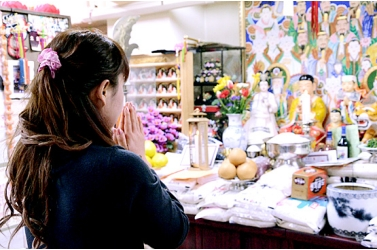

祈りの伝統を受け継ぎ、
一人ひとりと向き合う。
大切にしているのは、ご自身を見つめ、
これからの選択を考えるお手伝いをすること。
龍門精舎は、韓国の祈りの伝統を背景に、占いや祈祷を通じた相談を行っています。初めての方にも、鑑定や祈祷の内容をご案内します。
ご相談に合わせて、
鑑定をお選びください。
内容と料金を確かめて、安心して相談を。迷われる場合は、ご希望を伺ってからご案内します。
{{ f.name }}（{{ f.time }}）
ご自身の力を、
生かすために。
韓国の公州市、鶏龍山に生まれ、祖父のもとで修行を重ねる。1992年に龍門精舎を継承。
占いや祈祷を通して、一人ひとりが自身の力を生かすための相談に向き合っています。
経歴は既存の自己紹介に基づく参考情報です。願いに寄り添う、
お札とお守り。
ご相談から鑑定まで。
-
{{ s.no }}
{{ s.title }}
{{ s.text }}
ご予約の前に。
{{ q.a }}
ご自身を見つめ、
これからを考える時間。
龍門精舎は、韓国の祈りの伝統を背景に、占いや祈祷を通じた相談を行っています。恋愛や仕事、家族、人生の節目など、ご相談はさまざまです。
一人ひとりの思いを伺い、これからを考える時間を大切にしています。
ご自身の力を生かすための
お手伝いを。
努力を重ねていても、思うように進まないことや、先の見えない不安を感じることがあると思います。鄭東秀先生が既存の挨拶で伝えているのは、ご自身を理解し、持っている力を生かして歩むためのお手伝いを大切にするという考え方です。
既存の挨拶の趣旨をまとめた紹介です。新たな本人の発言としては掲載していません。韓国の祈りと
ムーダン。
龍門精舎では、神々への祈りを通じて人々の相談に向き合う「ムーダン」としての歩みを大切にしています。祈祷の場では、衣装や祭具を用いた儀式が行われます。その意味や、ご相談に応じた内容についてはお問い合わせください。
龍門精舎の既存の説明に基づく紹介です。鄭東秀の歩み。
以下は既存の自己紹介に基づく参考情報です。団体名・役職・称号は確認中です。
- {{ t.y }} {{ t.t }}
恋愛、仕事、家族、これからの暮らし。
ご相談内容に合わせて、鑑定方法をお選びいただけます。
{{ c.title }}
{{ c.text }}
基本の鑑定メニュー。
デモ用参考料金・現行料金・税込区分は確認中{{ f.name }}
{{ f.desc }}
来店が難しい方も、ご相談ください。
既存の案内には、対面のほか電話やオンラインでの鑑定についての記載があります。現在の受付方法、使用するアプリ、対象メニューと適用料金は確認中です。
メール・出張鑑定は旧サイトに記載がありますが、継続確認前のため現行メニューとしては掲載していません。四柱推命の独立メニューとしての扱いも確認中です。
鑑定方法について相談する事業や店舗についてのご相談。
旧サイトには、事業の節目、新たな事業や店舗の開設についての鑑定・祈祷の案内があります。現在の対応内容と訪問の可否、費用は確認が必要です。
企業向けの旧料金を、個人向けの参考料金に合算していません。 企業や店舗の相談をするご予約の前にご確認ください。
相談したいことと、ご希望の鑑定方法をお知らせください。お名前や生年月日など、鑑定に必要な情報はお申し込みの際にご案内します。
- 現行料金・税込区分・延長料金は確認中です。
- 出張の交通費・宿泊費、変更・キャンセル条件は確認中です。
- 祈祷の「1時間」は既存の予約枠です。儀式の実施時間を確約するものではありません。
- 追加のサービスは、内容と費用をご確認のうえでお申し込みください。
鄭 東秀
チョン ドンス韓国の公州市、鶏龍山に生まれ、祖父のもとで修行を重ねる。1992年に龍門精舎を継承。
占いや祈祷を通して、一人ひとりが自身の力を生かすための相談に向き合っています。
経歴・第4代総師の肩書きは既存の自己紹介に基づく参考情報です。現在の対応内容は確認中です。既存サイトで紹介されている先生。
以下は既存資料の掲載情報です。現在の在籍や担当内容を確定した一覧ではありません。
{{ t.name }}
現在の在籍・担当鑑定・指名条件は確認中です。
先生選びに迷われる方へ。
ご相談内容と、ご希望の受け方をお知らせください。対応する鑑定・場所・指名条件について、正式な受付情報をご確認のうえでご予約ください。
祈祷とグッズについて。
龍門精舎では、願いに向き合い、祈りを捧げる祈祷やグッズについてのご相談を承ります。お悩みやご希望を伺い、内容に応じてご案内します。
ご相談内容をお聞かせください。
個人の方の願いやご相談を伺います。事業や店舗に関する祈祷は、現在の受付内容を確認してからのご案内となります。必要な準備、場所、所要時間は内容によって異なります。
内容と費用をご確認いただいてから。
- 一ご相談内容とご希望を伺います。
- 二実施する内容、場所、日時、費用をご案内します。
- 三内容をご確認のうえで、お申し込みいただきます。
お祓いについて。
旧サイトにはお祓いの案内がありますが、具体的な説明と現在の対応内容は確認中です。気になっていることと、ご希望をお知らせください。
ご予約の店舗と日時をお確かめください。
このデモの店舗情報は既存資料に基づく参考情報です。現在の営業店舗、所在地、受付時間、連絡先は確認中のため、地図や経路案内は設置していません。
龍門精舎 新宿本店
- 参考住所
- 東京都新宿区
歌舞伎町2-42-16 2F - 建物名
- 大瀧ビルの表記・階数を確認中
- アクセス・受付時間
- 最寄り駅の出口、徒歩分数、受付時間は確認中
新大久保イケメン通り店
- 所在地
- 既存資料間に相違があるため、正式住所を確認中
- 受付時間・担当者
- 現在の営業・受付体制を確認中
ご来店にあたって。
予約の要否、支払方法、駐車場、お子様・ペットの同伴、喫煙・Wi-Fiの条件は確認中です。旧記事の条件を現在の店舗条件として掲載していません。
電話番号や問い合わせ先も資料に複数の記載があるため、デモから実際の窓口への接続は行いません。
願いや気になっていることを伺い、
祈りを込めて。
龍門精舎では、ご相談に合わせた霊符やお守りをご案内しています。制作方法や個別相談の有無は、商品ごとの案内をご確認ください。
{{ p.name }}
{{ p.desc }}
霊符画とお守りグッズ。
既存のオンラインショップには、霊符画やお守りグッズも掲載されています。作品や商品の詳細、販売状況は個別に確認が必要です。
ご購入について。
個別相談が必要な商品は、それぞれの商品ページの案内に沿ってお申し込みください。発送時期・送料・海外へのお届けは、ご購入前にご確認ください。
デモでは購入に進めません。掲載商品・価格は仮のものです。入力内容をご確認ください。
- {{ r.k }}
- {{ r.v }}
このデモでは送信されません。